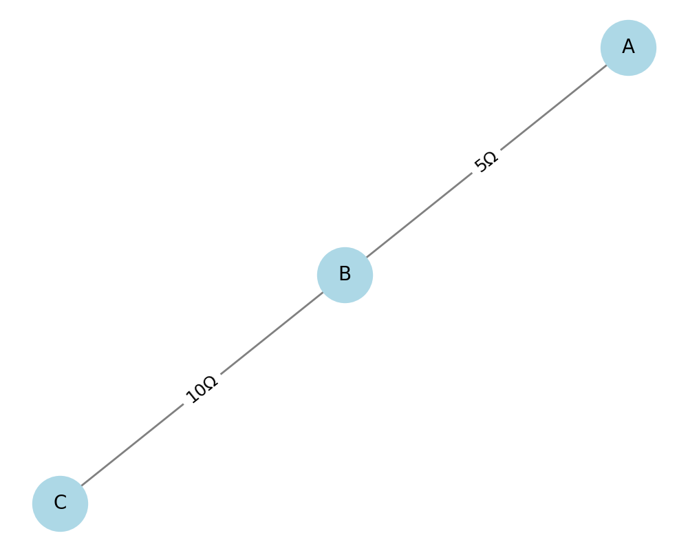
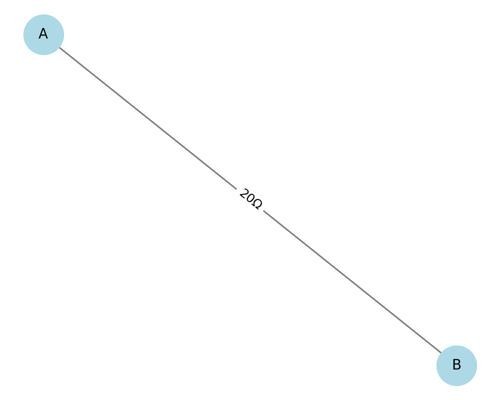
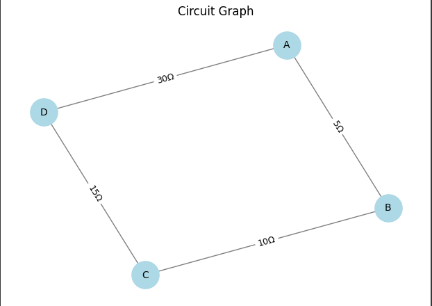

Equivalent Resistance Using Graph Theory
1. Problem Statement
Goal: Compute the equivalent resistance between two nodes in a resistor network using graph theory.
2. Algorithm Explanation
We treat the resistor network as an undirected weighted graph, where:
- Nodes represent junctions in the circuit.
- Edges represent resistors with weights equal to resistance values.
- The task is to find the equivalent resistance between two specific nodes (source and target).
3. Key Reduction Rules
-
Series Reduction: If a node has exactly two neighbors and is not the source or target, we can collapse it: \(R_eq = R1 + R2\)
-
Parallel Reduction: If multiple edges connect the same pair of nodes:
\(1/R_eq = sum(1/Ri)\)
- General Case: Use Kirchhoff's laws and linear algebra to solve for node potentials and derive current, if needed. But for simplification and automation, we reduce the graph step by step using rules above.
4. Python Implementation (with NetworkX)
import networkx as nx
import matplotlib.pyplot as plt
def draw_circuit_inline(G, title="Circuit"):
pos = nx.spring_layout(G, seed=42)
edge_labels = {(u, v): f"{d['resistance']}Ω" for u, v, d in G.edges(data=True)}
plt.figure(figsize=(5, 4))
nx.draw(G, pos, with_labels=True, node_color='lightblue', edge_color='gray', node_size=800, font_size=10)
nx.draw_networkx_edge_labels(G, pos, edge_labels=edge_labels, font_size=9)
plt.title(title)
plt.axis('off')
plt.show()
# Example 1 – Series Only
G1 = nx.MultiGraph()
G1.add_edge('A', 'B', resistance=5)
G1.add_edge('B', 'C', resistance=10)
draw_circuit_inline(G1, "Example 1 – Series")
# Example 2 – Parallel Only
G2 = nx.MultiGraph()
G2.add_edge('A', 'B', resistance=10)
G2.add_edge('A', 'B', resistance=20)
draw_circuit_inline(G2, "Example 2 – Parallel")
# Example 3 – Mixed
G3 = nx.MultiGraph()
G3.add_edge('A', 'B', resistance=5)
G3.add_edge('B', 'C', resistance=10)
G3.add_edge('C', 'D', resistance=15)
G3.add_edge('A', 'D', resistance=30)
draw_circuit_inline(G3, "Example 3 – Mixed")
5. Example Scenarios
Example 1 – Series Only
\(A --(5Ω)-- B --(10Ω)-- C\)
Result: \(R_eq = 15Ω\)

Example 2 – Parallel Only
$ A --(10Ω)-- B A --(20Ω)-- B $
Result: \(R_eq = 1 / (1/10 + 1/20) = 6.67Ω\)

Example 3 – Mixed (like in code above)
$ A --(5Ω)-- B --(10Ω)-- C --(15Ω)-- D A ----------------------------- D (30Ω) $
Combined:
\(R_(parallel) = 1 / (1/30 + 1/30) = 15Ω\)
Equivalent resistance from A to D: 30Ω 
6. Efficiency & Improvements
- Time complexity: Each reduction (series or parallel) is linear with respect to number of nodes/edges.
- Can be improved with:
- Better pattern detection for mesh loops (needs Kirchhoff's matrix method).
- Symbolic computation (e.g. using
sympy) for algebraic analysis.